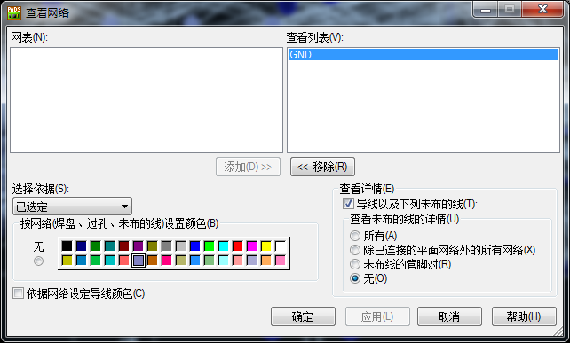
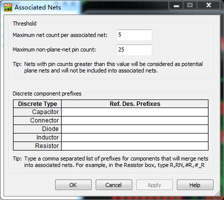

20160421
Layout
Board Outline
建立板边框(Board Outline) 板边框必须为闭合图(Close Polygon)
修改板边框(Board Outline)
导入AutoCAD绘制的板框
AutoCAD多段线工具,绘制封闭的图形,保存为 DXF 格式
在AutoCAD中选中图形 / 右键 / 特性 / 闭合(closed) : 是
问：DXF的文件我导入以后怎样转成PCB的板框？
答：避免AUTOCAD 文件轉 POWER PCB 單位出錯方法避免AUTOCAD转POWER單位出錯問題的方法：
1.在AUTOCAD中先選中圖形使用”PURGE”命令將所有附屬圖層,只留0層;
2.在AUTOCAD中先選中圖形,使用”MOVE”命令將圖移動至0點{鍵入0,0}
3.在AUTOCAD中鍵入”W”命令(WRITE BLOCK),設置原點,選擇圖形，要注意单位的更改。通常使用的是 ”METERS”來做單位,確認後會自動存儲為 “NEW BLOCK.DWG”.關閉文件.
4.打開剛剛存儲的”NEW BLOCK.DWG”文件,檢查無問題後另存為 AUTOCAD R12/LT2 DXF 格 式的文件. E365
5.使用 POWER PCB 導入”IMPORT”,導入後可看見 DXF－File Unit 為” METRIC” 是正確的。
6.Power PCB 中選擇已導入的圖框，後進行組合(Combine)，再將圖框放入改為其他層面。 在AutoCAD中把线弄成闭合的2D Line导出后，在Power PCB中可直接用Scale命令改成板框。
AutoCAD改闭合线的方法：
1． 在命令栏中输入：PE，选择其中一条线，回车 ，按J 后选择所要闭合的线，直接回车、回车便可。
元件布局(Placement)
散开(Disperse)元器件(Component)
> Tools / (分散元器件)Disperse Components
布局时如何让飞线距离最短
长度最小化
Setup\design rules\default rules\Routing\ Topology type \ Minimized
工具 / 长度最小化(Ctrl+M)
>View / Nets... / 将GND和电源颜色设置为黑色或蓝色

建立禁止区（Keepout）
> Drafting Toolbar / Board Outline and Cut Out / Right click /
Options / Design / 移动首选项(Move Preference) / 按光标位置移动(Move by cursor locati)
Options / Design / 推挤(Nudge) / 自动(Automatic)
设置对象的原点
1. 右键弹出菜单(Pop-up Menu) / 选择形状(Select Shapes)
2. 选择操作对象(对象可以是板框(Board Outline)、2D Line、PCB封装、覆铜形状、禁止区形状、尺寸标注形状)
3. 右键弹出菜单(Pop-up Menu) / 设置原点(Set Orinig)
顺序地(Sequentially)放置元器件
a. 使用查找(Find)命令放置元器件
编辑(Edit) / 查找(Find)
or
点击右键 / 查找(Find)
在列表中选择所需的元器件,该方法会以字母数字顺序放置元器件
b. 在工作区选择所需的元器件 / 右键 / 按顺序移动(Move Sequential) / 勾选 按参考编号升序移动? / 全是(Yes to All) /
该方法会以选择元器件"相反"的顺序放置元器件,最后选中的元器件会"首先"附着在光标上
修改元器件所在的面
选择所需的元器件 / 右键 / 翻面(Flip Side)(Ctrl+F)
or
选择所需的元器件 / 右键 / 特性 / 层 : Top or Bottom
对齐元件
选中一排或一列元件,点击鼠标右键 / 对齐(Align(Ctrl+L))
上面一排为向左对齐、中间垂直对齐、向右对齐
下面一列为向上对齐、中间水平对齐、向下对齐
元件组合(Unions)
组合是用户创建的元器件之间有严格关系的元器件关联,如距离、旋转、角度、顶面或底面等
你可以建立由IC和去藕电容、电阻等组成的组合,并且作为IC元件类型(Part Types)的样品,
PADS Layout 将自动查找并建立相似的组合(Similar Unions)
例如由IC和去藕电容组成的组合，一旦这些元件作为组合存在，它们将被一起移动
建立组合
1.使用Ctrl+Click 同时选择U1、C1、R1...
注意选择元件时的次序如果你不首先选择主IC，当放置元件组合时，将会选择不合适的原点，给定位时将不正确
2.对于同时被选择的元件，点击鼠标右键从弹出菜单(Pop-up Menu)中选择建立组合(Create Union(Ctrl+G))。
3.键入一个组合的名字
建立相似组合(Like Unions)
为了查找相类似的组合(Similar Unions)，使用建立相似组合(Create Like Unions)。
这个命令将寻找同样元件类型(Part Types)的元件(Components)，并且以前面建立的组合为基础，自动地建立组合。
1.空白处点击右键选择组合/元件(Select Unions/Components)
2.选择前面已建立的一个组合,右键"创建相似的组合(Create Like Unions)" / Yes /
复用功能(Make Like Reuse)快速完成相同电路模块的操作过程
如 : PCB中有N个相似的功能模块,可以利用Reuse功能来进行复用
1.将其中的一个布好线
2.右键 / 选择任意 / 选择布好线的模块 / 右键 / 建立复用模块(Make Reuse) / 输入一个复用模块名称 / 保存为reu文件 /
现在已经建好了复用模块,可以利用以下两种方法中的一种完成其它模块的布线
a.再右键(在上个右键的地方) / 建立相似复用模块(Make Like Reuse) / 这时软件将自动到未布线的元件中搜索与此复用(Reuse)信息相匹配的一组元件粘附在鼠标上待完成布局及布线
b.设计工具栏(Design Toolbar) / 建立相似复用模块(Make Like Reuse) /选择上面建好的利用模块 / ...
完成复用后,因变成复用模块的元件、网络及过孔等一齐是不能移动或编辑的,所以先要把复用模块打散
右键选择 筛选条件/ 复用模块(Reuse) / 在复用模块上右键 / 打散复用模块(Break Reuse)
Add Reuse
在ECO模式下,可以将 Reuse 添加到新设计的文件里
关联网络(Associated Nets)
要把电阻、排阻或是其他元器件两端的网络合成一个网络
设置(Setup) / 关联网络(Associated Nets)
中间用逗号隔开 如 : R,RN

PCB板边制作邮票孔半孔 半孔板也称邮票板
当印制导线的铜膜厚度
为0.05mm 时，印制导线的载流量可以按照20A/mm2 进行计算，即0.05mm 厚，1mm 宽
的导线可以流过1A 的电流。所以对于一般的信号线来说10～30mil 的宽度就可以满足要求
了；高电压，大电流的信号线线宽大于等于40mil，线间间距大于30mil。为了保证导线的
抗剥离强度和工作可靠性，在板面积和密度允许的范围内，应该采用尽可能宽的导线来降低
线路阻抗，提高抗干扰性能。
对于电源线和地线的宽度，为了保证波形的稳定，在电路板布线空间允许的情况下，尽量加
粗，一般情况下至少需要50mil。
对于高频或者其他一些重要的信号线，例如时钟信号线，一方面其走线要尽量宽，另一方面
可以采取包地的形式使其与周围的信号线隔离起来（就是用一条封闭的地线将信号线“包裹”
起来，相当于加一层接地屏蔽层）。
对于模拟地和数字地要分开布线，不能混用。如果需要最后将模拟地和数字地统一为一个电
位，则通常应该采用一点接地的方式，也就是只选取一点将模拟地和数字地连接起来，防止
构成地线环路，造成地电位偏移。
完成布线后，应在顶层和底层没有铺设导线的地方敷以大面积的接地铜膜，也称为敷铜，用
以有效减小地线阻抗，从而削弱地线中的高频信号，同时大面积的接地可以对电磁干扰起抑
制作用。
电路板中的一个过孔会带来大约10pF 的寄生电容，对于高速电路来说尤其有害；同时，过
多的过孔也会降低电路板的机械强度。所以在布线时，应尽可能减少过孔的数量。另外，在
使用穿透式的过孔（通孔）时，通常使用焊盘来代替。这是因为在电路板制作时，有可能因
为加工的原因导致某些穿透式的过孔（通孔）没有被打穿，而焊盘在加工时肯定能够被打穿，
这也相当于给制作带来了方便。
PCB 布线要求
（1）不同电压等级电源应该隔离，电源走线不应交叉。
（2）走线采用45°拐角或圆弧拐角，不允许有尖角形式的拐角。
（3）PCB 走线直接连接到焊盘的中心，与焊盘连接的导线宽度不允许超过焊盘外径的大小。
（4）高频信号线的线宽不小于20mil，外部用地线环绕，与其他地线隔离。
（5）干扰源（DC/DC 变换器、晶振、变压器等）底部不要布线，以免干扰。
（6）尽可能加粗电源线和地线，在空间允许的情况下，电源线的宽度不小于50mil。
（7）低电压、低电流信号线宽9～30mil，空间允许的情况下尽可能加粗。
（8）信号线之间的间距应该大于10mil，电源线之间间距应该大于20mil。
（9）大电流信号线线宽应该大于40mil，间距应该大于30mil。
（10）过孔最小尺寸优选外径40mil，内径28mil。在顶层和底层之间用导线连接时，优选
焊盘。
（11）不允许在内电层上布置信号线。
（12）内电层不同区域之间的间隔宽度不小于40mil。
（13）在绘制边界时，尽量不要让边界线通过所要连接到的区域的焊盘。
（14）在顶层和底层铺设敷铜，建议设置线宽值大于网格宽度，完全覆盖空余空间，且不
留有死铜，同时与其他线路保持30mil（0.762mm）以上间距（可以在敷铜前设置安全间距，
敷铜完毕后改回原有安全间距值）。
（15）在布线完毕后对焊盘作泪滴处理。
（16）金属壳器件和模块外部接地。
（17）放置安装用和焊接用焊盘。
（18）DRC 检查无误。